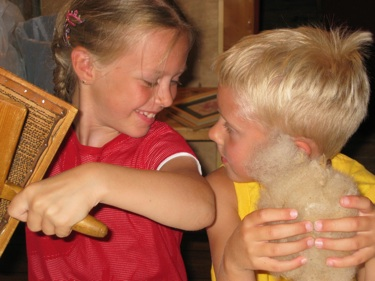
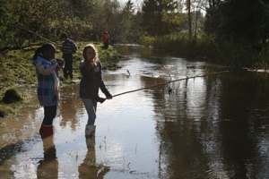
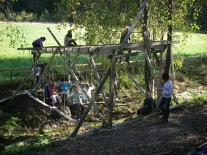

Aarholt-tunet sine visjoner - utvikling av mennesker.
De fleste steder har sine visjoner. Hos Svein kom visjonen i 18-19 års alder: UTVIKLING AV MENNESKER. Og den har modnet seg etterhvert som bygninger ble restaurert og fylt med mennesker på begynnelsen av 1990-tallet. Akkurat slik som de flere hundre år gamle bygningene har ressurser og liv i seg til å bli noe mer enn de er.... slik kan det og bli med mennesker som fyller dem.

Noen av de første som kom hit, var barn alene på bondegårdsferie i 1991. Og vi ble tent da vi så øynene deres når de opplevde å erfare og lære noe nytt.
Etter hvert ble det flere grupper vi kunne ønske velkommen som gjester til Aarholt-tunet.
{kind=link}
I et trygt, rusfritt miljø kan barn, ungdom, familier og voksne få være med på en kombinasjon av overnatting, matservering, aktiviteter, opplevelser og læring.
Utvikling av mennesker skjer både mentalt og fysisk - og gjerne i samhandling med hverandre, - i det livet som leves på gården med dyrene og med menneskene som bor og virker her. Den enkelte får oppleve både egenmestring, samhandling og undring og ro på læringsarenaene både inne og ute.

{kind=link}